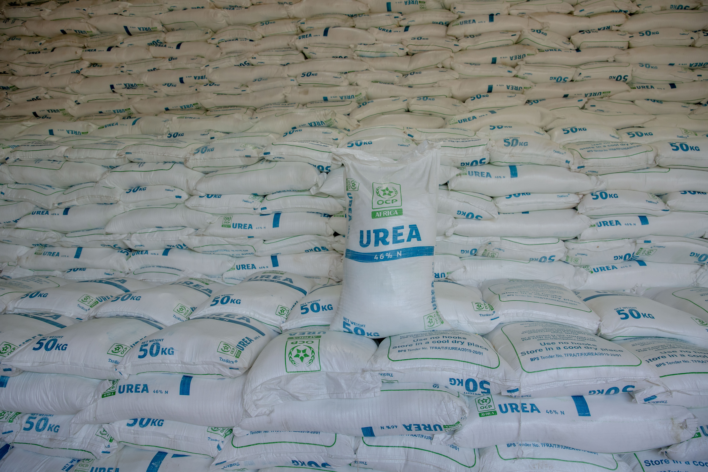
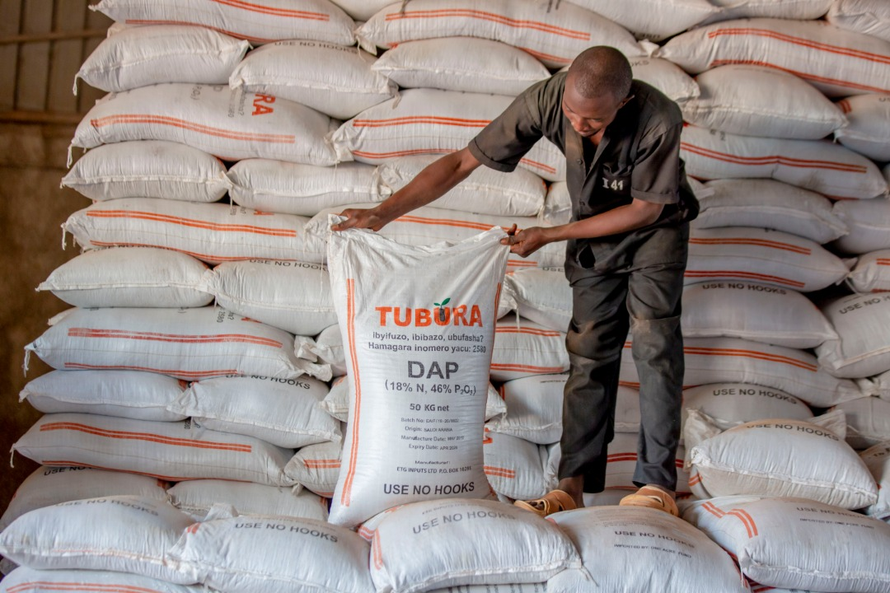
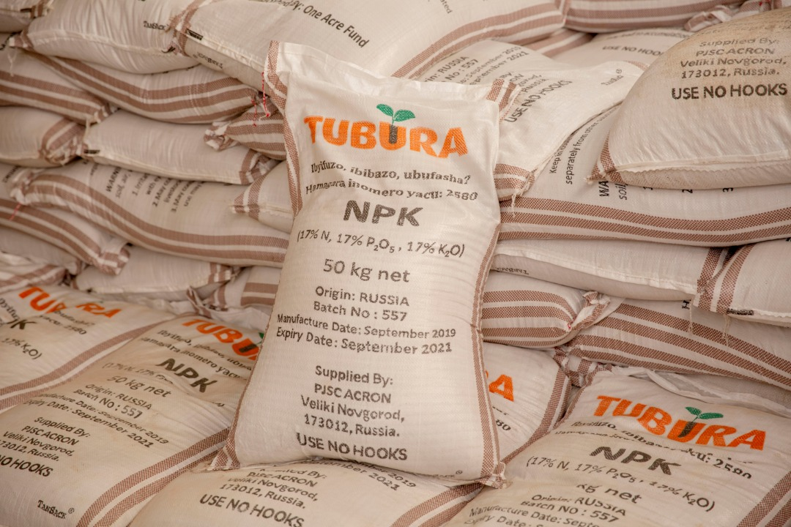

Home / Fertilizers and Seeds distribution

Fertilizer and seed distribution has been viewed as one of major niche business areas to invest in given the trend of importations of fertilizers and improved seeds.
Given the business potential there is in distribution of fertilizers and seeds across the country coupled with a request by the Ministry of Agriculture to partner up with APTC in ensuring timely delivery of the seeds and fertilizers to farmers, the leadership of APTC agreed to venture in the business and resolve the recurring issues of untimely delivery of both fertilizers and seeds to farmers which were also of poor quality.
Since 2016, this project has addressed a myriad of challenges associated with unreliable distribution networks of both seeds and fertilizers which included thousands of payment claims by farmers for undelivered fertilizers or un-imported products and other related malpractices.
Accordingly, the project has distributed various types of fertilizers (including AMIDAS, CEREAL, DAP, KCL/MOP, NITRABOR, NPK, TRACEL BZ, UREA and WINNER) through partnership arrangements with agro-dealers for onward distribution to end-users/farmers under “Twigire Muhinzi program”.
In order to produce mineral fertilizers adapted to Rwandan soils and crops, OCP Africa & MINAGRI and APTC have entered into a Joint venture for the development of a fertilizer blending plant in Bugesera industrial Park with a legal name, 'Rwanda Fertilizer Company' (RFC). The plant is expected to start in March 2019 with an installed capacity of 75,000 metric tons per year and production capacity of 100 tones/hour. The facility will produce products capable of fixing specific soil lacking nutrients in the different geographic regions in the country


All Rights Reserved © 2025 - Agro Processing Trust Corporation